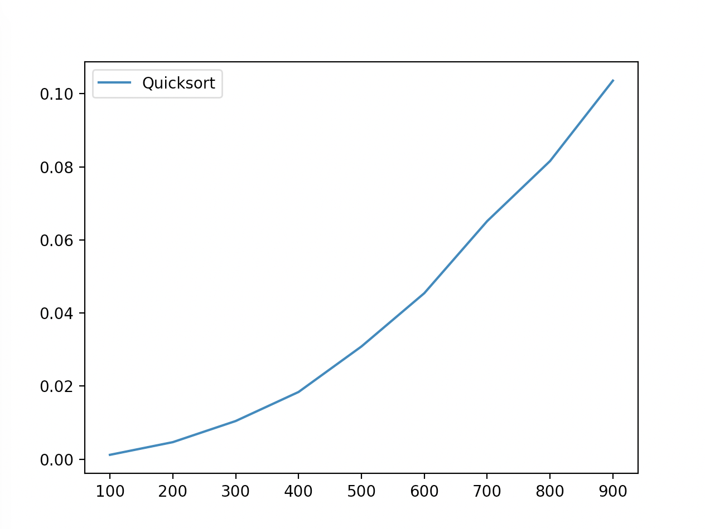
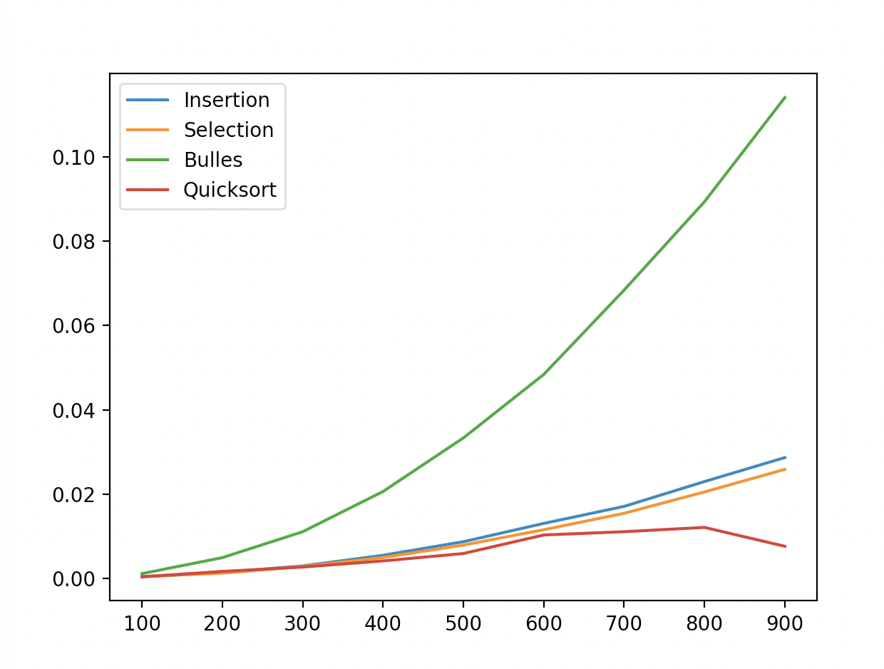

Librairies
Tout comme on trouve les intercalaires dans des classeurs regroupants différents type d'information, on va souvent trouver des modules dans des paquets (packages en anglais). Alors que la création de paquets ne vous sera surrement pas utile dans le futur proche, leur utilisation sera nécessaire. La disponibilité de paquets pour faire tout et n'importe quoi fait une des forces de python.
Dans cette section nous utiliserons le paquet matplotlib qui permet de visualiser des données sous différentes formes. De matplotlib nous utiliserons le module pyplot qui permet de réaliser ces visualisations de façon similaire à MATLAB. Pour importer ce module, il suffira alors (après avoir installé le paquet avec pip bien sûr) d'exécuter l'instruction import matplotlib.pyplot. Voici un exemple de programme pour dessiner un fonction quadratique:
import matplotlib.pyplot
list_x = range(10)
list_y = []
for x in list_x:
list_y.append(x*x)
matplotlib.pyplot.plot(list_x, list_y)
matplotlib.pyplot.show()
Comme les accès aux modules peuvent être nombreux, pour faciliter la lecture de notre programme il est possible d'utiliser l'instruction import matplotlib.pyplot as plt (plt ou ce que l'on désire) pour accéder directement à toutes les fonctions du module à l'aide du nom choisi. Le programme deviendra alors:
import matplotlib.pyplot as plt
list_x = range(10)
list_y = []
for x in list_x:
list_y.append(x*x)
plt.plot(list_x, list_y)
plt.show()
Exercice 5
- Modifiez ce programme afin que la fonction quickSort soit intégrée au module ModuleTri.
- Utiliser la fonction time.perf_counter() du module time pour visualiser combien de temps il faut pour trier un liste en fonction de sa taille comme le montre la figure suivante.
- La courbe que vous obtenez est probablement différente à celle qui suit. C'est normal: la liste a été triée au hasard. Pour faire une estimation de performance qui dépend moins du hasard, pour chaque taille de liste, faire n = 10 tri avec des listes différentes et calculer le temps moyen qu'il faut pour effectuer le tri en fonction de la taille d'une liste.

Exercice 6
Optionnel: Modifier votre programme pour visualiser les performances du tri à bulles, du tri rapide, du tri par insertion et du tri par séléction le tout sur un graphique comme dans la figure ci-dessous.

Exercice 7
Optionnel: Modifier votre programme pour faire apparaître l'écart type du temps de calcul par rapport à la taille de la liste. Vous pourrez utiliser par exemple la fonction fill_between().